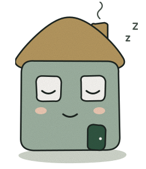

9:41
▮▮▮ ◔ ▭

기록
최근 90일 알림
4
건
✓ 확인함 3
·
⚠ 확인 안 됨 1
· 평균 확인 3분
주별 알림 · 최근 12주
예시 데이터
8/3
9/3
9/28
10/21
전체 4
확인함 3
확인 안 됨 1
10월 21일
오전 9:12
2분 뒤 확인
✓ 확인함
10월 9일
오후 7:30
‘가고 있어요’
✓ 확인함
9월 28일
새벽 2:05
아무도 안 봤어요
확인 안 됨
9월 3일
오후 1:47
5분 뒤 확인
✓ 확인함
홈
기록
설정